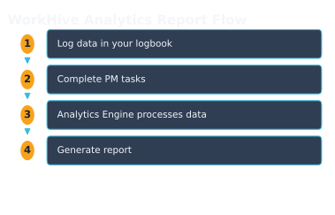
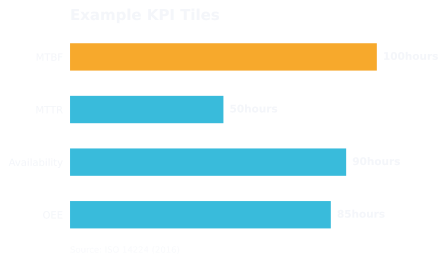

WorkHive Learn · Philippines
The Print-Ready Maintenance Report Your Management Actually Reads
Who this is for
- Plant managers who oversee maintenance operations and need to assess performance
- Operations heads who require insights into maintenance efficiency and effectiveness
- Auditors who conduct maintenance audits and ensure compliance with standards
- Reliability engineers who analyze maintenance data to improve equipment reliability
- Supervisors who track and report maintenance performance to management
- Maintenance technicians who log data that feeds into the Analytics Report
What's in this guide
What is the WorkHive Analytics Report?
The WorkHive Analytics Report is a print-ready maintenance report automatically compiled from the four analytics phases in WorkHive. For instance, a plant in Calabarzon, such as the Laguna Technopark, can utilize this report to streamline their maintenance analysis. The report provides an executive summary, KPI tiles with RAG colours, an AI-generated action plan, and a sign-off block.
This report is the one-click output of the Analytics Engine, which is fed by logbook and PM completions. It mirrors the standard maintenance audit format, satisfying management, ISO auditors, and DOLE compliance reviews. The report includes **MTBF**, **MTTR**, **Availability**, **OEE**, and **PM Compliance** KPI tiles, providing a comprehensive overview of maintenance performance.
The Analytics Report is a management-ready document that turns raw entries into a printable, signed, audit-ready document. Plant managers, operations heads, and auditors can use it to assess maintenance performance. With the **Generate Report** button, users can create a PDF report, which can be saved and signed off by supervisors or workers, ensuring a seamless workflow.
Who Reads the WorkHive Analytics Report?
The WorkHive Analytics Report is typically reviewed by senior personnel who oversee maintenance operations. In a Philippine plant, the Plant Supervisor or Maintenance Planner usually takes charge of ensuring the report's findings are addressed. They use the report to stay on top of maintenance performance and identify areas for improvement.
The report is also useful for Operations Heads and Reliability Engineers who need to evaluate the effectiveness of maintenance strategies. It provides a comprehensive overview of key performance indicators, such as MTBF, MTTR, and OEE, which are essential for informed decision-making. The report's executive summary and RAG-coloured KPI tiles make it easy to quickly understand the plant's maintenance performance.
Auditors, both internal and external, also rely on the Analytics Report to verify compliance with maintenance standards and regulations. The report's format mirrors the standard maintenance audit format, making it an essential document for ISO auditors and DOLE compliance reviews. By using the Analytics Report, plant managers and supervisors can ensure that their maintenance operations meet the required standards.
How the WorkHive Analytics Report Works
The WorkHive Analytics Report provides a print-ready maintenance report that your management will actually read. For example, at the end of a 24-hour shift, your plant's reliability engineer can quickly generate a report to review the previous day's maintenance activities. The report is automatically compiled from the four analytics phases, giving you a comprehensive overview of your plant's performance. The report includes an executive summary, RAG-coloured KPI tiles for MTBF, MTTR, Availability, OEE, and PM Compliance, an AI-generated action plan, and a sign-off block. These components mirror the standard maintenance audit format, making it easy to satisfy management, ISO auditors, and DOLE compliance reviews. The report is also customizable, allowing you to input your name and report title, such as 'Plant Reliability Q2'.- Log in to WorkHive and navigate to the Analytics Report section.
- Choose a date range using the 30d, 90d, 180d, or 365d buttons.
- Click the Generate Report button to compile the report from your existing data.
- Review the report, which includes the executive summary, KPI tiles, action plan, and sign-off block.
- Save the report as a PDF using the Save as PDF button.

What Does the WorkHive Analytics Report Contain?
The WorkHive Analytics Report contains a comprehensive overview of your plant's maintenance performance. It starts with an Executive Summary that provides a high-level view of your maintenance operations. This is followed by a series of RAG-coloured KPI tiles (red, amber, and green) that display key performance indicators such as MTBF, MTTR, Availability, OEE, and PM Compliance for a specific equipment like Pump P-204B.
The report also includes an AI-generated action plan that outlines recommended steps to address maintenance issues. Additionally, there is a sign-off block for approval and verification. The report's structure mirrors the standard maintenance audit format, making it suitable for management review, ISO auditors, and DOLE compliance reviews. The report is automatically compiled from the four analytics phases, providing a one-click output of your Analytics Engine.
The Analytics Report is a printable, signed, and audit-ready document that turns raw entries into a document you hand upward, satisfying the needs of plant managers, operations heads, auditors, and reliability engineers. It is a zero-budget solution that compiles from existing data, eliminating the need for a separate reporting tool.

Benefits of the WorkHive Analytics Report
The WorkHive Analytics Report offers numerous benefits to plant managers and maintenance teams in the Philippines. For instance, a plant in Calabarzon can easily generate a comprehensive report that highlights key performance indicators such as MTBF, MTTR, and OEE. This report provides a clear overview of maintenance performance, enabling managers to identify areas for improvement.
The report's executive summary and RAG-coloured KPI tiles provide a quick and easy-to-understand snapshot of maintenance performance. The AI-generated action plan also helps teams prioritize corrective actions and optimize maintenance activities. This results in significant time savings, as the report compiles automatically from existing data, eliminating the need for manual reporting.
| Benefits | Description |
|---|---|
| Easy Generation | Automatically compiles from existing logbook and PM completion data |
| Clear Insights | RAG-coloured KPI tiles and executive summary provide a quick overview of maintenance performance |
| Actionable Recommendations | AI-generated action plan helps teams prioritize corrective actions |
Implementing the WorkHive Analytics Report in Your Plant
To implement the WorkHive Analytics Report in your Philippine plant, start by navigating to the Analytics Report page. As a Plant Supervisor, you can access this page and click on the desired date range button - 30d, 90d, 180d, or 365d - to view the maintenance analytics for that period.
Once you've selected the date range, the Analytics Report will be generated, displaying the executive summary, RAG-coloured KPI tiles, and AI-generated action plan. You can review this report and make any necessary adjustments before saving it as a PDF document. The report is designed to mirror the standard maintenance audit format, making it easy to share with management, ISO auditors, and DOLE compliance reviewers.
The Analytics Report is a valuable tool for plant managers, operations heads, and reliability engineers, providing a clear and concise overview of maintenance performance. By using this report, you can turn raw log entries into a comprehensive document that supports informed decision-making and drives continuous improvement.
Open the tool: Analytics Report is the WorkHive surface this guide funnels into. It is free at the worker tier, works offline, and is built for Philippine plants.
Open Analytics Report →Frequently asked questions
What data is required to generate the WorkHive Analytics Report?
Who can access the WorkHive Analytics Report?
Is the WorkHive Analytics Report customizable?
How does the WorkHive Analytics Report support ISO compliance?
Can I use the WorkHive Analytics Report for internal audits?
Is there an additional cost for the WorkHive Analytics Report?
Sources
- ISO 14224:2016 - Petroleum, petrochemical and natural gas industries - Reliability, availability and maintainability (RAM) data exchange
- SMRP CMRP BoK - Society for Maintenance and Reliability Professionals - Certified Maintenance and Reliability Professional Body of Knowledge
- DOLE OSHS - Department of Labor and Employment - Occupational Safety and Health Standards
- Related WorkHive guides: The 4 phases of maintenance analytics · DOLE and ISO audit trail · What is OEE